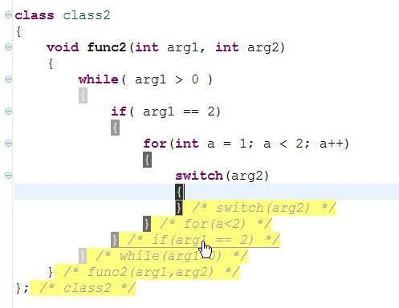
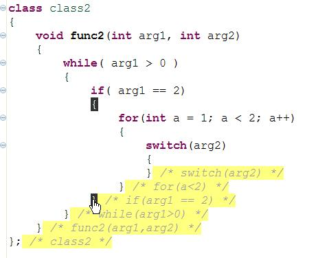

What can be hyperlinked? All kind of brackets (the hyperlink would
direct you to the matching bracket) and the "hints" (the hyperlink
would direct you to the statement).
"Hint" hyperlink screen shot:

Bracket pair hyperlink screen shot:

To change the hyperlink manipulators: Put the cursor in the edit box
and press the manipulators you wish to use for hyperlink. For example,
if you press Ctrl (release it) and then press Alt, you'll see in the
edit box: "Ctrl+Alt".
To use: When you press the manipulators (and hold them) (in our
example, it's both Ctrl and Alt, but it can be only one key) the mouse
cursor would become a hyperlink cursor if moved over a bracket or a
"hint".